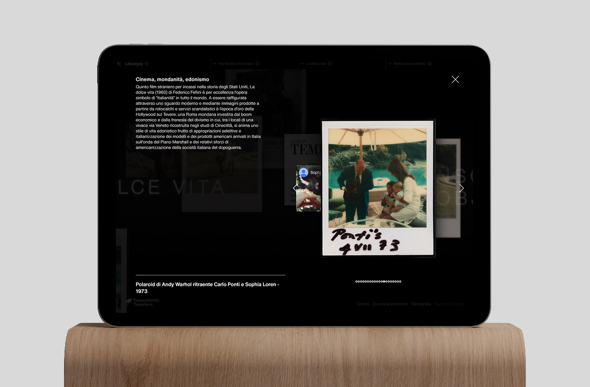

Transatlantic Transfers
-
An explorable web exhibition about the relationship between Italy and the US through popular media.
The Transatlantic Transfers website was developed in collaboration with the Architecture and Design Department of Politecnico di Milano, as the final
step of their research about the cultural implications of the relationship between America and Italy.
As design consultant for the project, Zetalab designed a digital exhibition where visitors all around the globe could explore the visual and written
documentation collected by the researchers, and dig deeper in the documentation provided by the university.
I took care of the visual and experiential design of the experience, transformed the documentation from the researchers into a database and developed the website.

Floating through the images
-
The main chunk of the exploration experience was built around an open digital space browsable by changing the position of the mouse cursor, like it was a big stream of images moving in three dimensions. The user can stop the flow and focus on a choosen image.
An immaterial exhibition
-
To avoid the limitations of an on-site museal exhibition, Transatlantic Transfer was designed as a tool suited for all digital devices, from desktop computers to mobile. Users are presented with different views that allow various depths of exploration of the research content.
Content rationalization
-
The huge amount of photos, illustrations, letters, newspapers and magazine covers provided by Politecnico di Milano was divided into six main categories, that conceptually correspond to the various section of a museum exhibition.